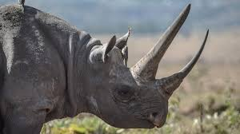

Adult African elephants are the largest land animals on Earth. They are slightly larger than their Asian cousins and can be identified by their larger ears that look somewhat like the continent of Africa. (Asian elephants have smaller, rounded ears.) African elephants are a keystone species, meaning they play a critical role in their ecosystem. Also known as "ecosystem engineers," elephants shape their habitat in many ways. During the dry season, they use their tusks to dig up dry riverbeds and create watering holes many animals can drink from. Their dung is full of seeds, helping plants spread across the environment—and it makes pretty good habitat for dung beetles too! In the forest, their feasting on trees and shrubs creates pathways for smaller animals to move through, and in the savanna, they uproot trees and eat saplings, which helps keep the landscape open for zebras and other plains animals to thrive.
Both black and white rhinoceroses are actually gray. They are different not in color but in lip shape. The black rhino has a pointed upper lip, while its white relative has a squared lip. The difference in lip shape is related to the animals' diets. Black rhinos are browsers that get most of their sustenance from eating trees and bushes. They use their lips to pluck leaves and fruit from the branches. White rhinos graze on grasses, walking with their enormous heads and squared lips lowered to the ground.